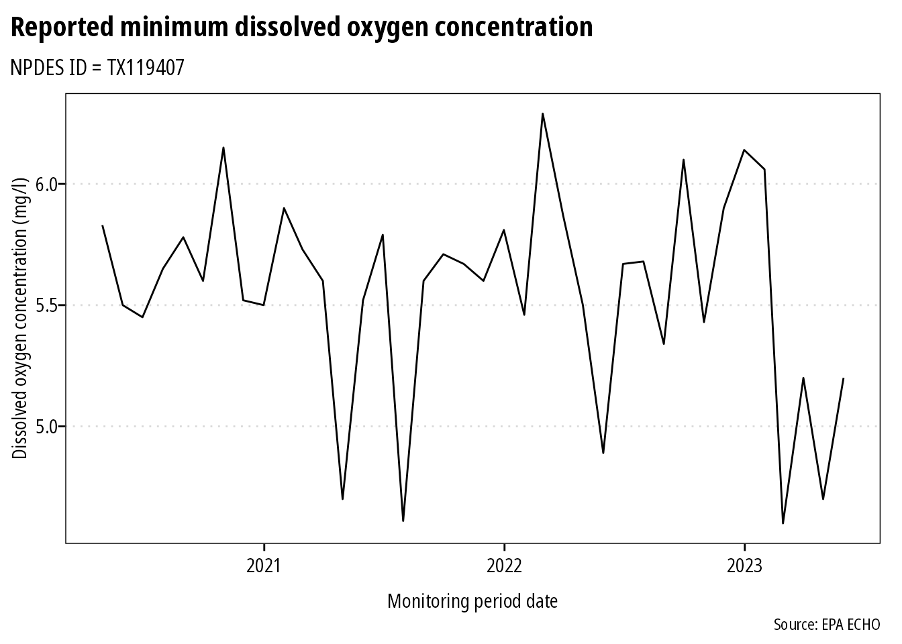

Overview
echor downloads wastewater discharge and air emission data for EPA permitted facilities using the EPA ECHO API.
Examples
Download information about facilities with an NPDES permit
We can look up plants by permit id, bounding box, and numerous other parameters. I plan on providing documentation of available parameters. However, arguments can be looked up here: get_cwa_rest_services_get_facility_info
library(echor)
## echoWaterGetFacilityInfo() will return a dataframe or simple features (sf) dataframe.
df <- echoWaterGetFacilityInfo(output = "df",
xmin = '-96.387509',
ymin = '30.583572',
xmax = '-96.281422',
ymax = '30.640008',
p_ptype = "NPD")
head(df)
#> # A tibble: 3 x 26
#> CWPName SourceID CWPStreet CWPCity CWPState CWPStateDistrict CWPZip
#> <chr> <chr> <chr> <chr> <chr> <chr> <chr>
#> 1 CENTRA… TX00027… 222 IREL… COLLEG… TX 09 77843
#> 2 HEAT T… TX01065… 0.25MI S… COLLEG… TX 09 77845
#> 3 TURKEY… TX00624… 3000FT W… BRYAN TX 09 77807
#> # … with 19 more variables: MasterExternalPermitNmbr <chr>, RegistryID <chr>,
#> # CWPCounty <chr>, CWPEPARegion <chr>, FacDerivedHuc <chr>, FacLat <dbl>,
#> # FacLong <dbl>, CWPTotalDesignFlowNmbr <dbl>,
#> # CWPActualAverageFlowNmbr <dbl>, ReceivingMs4Name <chr>,
#> # AssociatedPollutant <chr>, MsgpPermitType <chr>, CWPPermitStatusDesc <chr>,
#> # CWPPermitTypeDesc <chr>, CWPIssueDate <date>, CWPEffectiveDate <date>,
#> # CWPExpirationDate <date>, CWPSNCStatusDate <date>, StateAuthGen <chr>The ECHO database can provide over 270 different columns. echor returns a subset of these columns that should work for most users. However, you can specify what data you want returned. Use echoWaterGetMeta() to return a dataframe with column numbers, names, and descriptions to identify the columns you want returned. Then include the column numbers as a comma separated string in the qcolumns argument. In the example below, the qcolumns argument indicates the dataframe will include plant name, 8-digit HUC, latitude, longitude, and total design flow.
df <- echoWaterGetFacilityInfo(output = "df",
xmin = '-96.387509',
ymin = '30.583572',
xmax = '-96.281422',
ymax = '30.640008',
qcolumns = '1,14,23,24,25',
p_ptype = "NPD")
head(df)
#> # A tibble: 3 x 6
#> CWPName SourceID FacDerivedHuc FacLat FacLong CWPTotalDesignFlowN…
#> <chr> <chr> <chr> <dbl> <dbl> <dbl>
#> 1 CENTRAL UTILITY P… TX0002747 12070103 30.6 -96.3 0.93
#> 2 HEAT TRANSFER RES… TX0106526 12070101 30.6 -96.4 NA
#> 3 TURKEY CREEK WWTP TX0062472 12070101 30.6 -96.4 0.75When returned as sf dataframes, the data is suitable for immediate spatial plotting or analysis:
library(ggspatial)
library(sf)
library(ggrepel)
library(purrr)
## This example requires the development version of ggplot with support
## for geom_sf()
## and uses theme_ipsum_rc() from library(hrbrthemes)
df <- echoWaterGetFacilityInfo(output = "sf",
xmin = '-96.387509',
ymin = '30.583572',
xmax = '-96.281422',
ymax = '30.640008',
p_ptype = "NPD")
##to make labels, need to map the coords and use geom_text :(
## can't help but think there is an easier way to do this
df <- df %>%
mutate(
coords = map(geometry, st_coordinates),
coords_x = map_dbl(coords, 1),
coords_y = map_dbl(coords, 2)
)
ggplot(df) +
annotation_map_tile(zoomin = -1, progress = "none") +
geom_sf(inherit.aes = FALSE, shape = 21,
color = "darkred", fill = "darkred",
size = 2, alpha = 0.25) +
geom_label_repel(data = df, aes(x = coords_x, y = coords_y, label = SourceID),
point.padding = .5, min.segment.length = 0.1,
size = 2, color = "dodgerblue") +
theme_ipsum(plot_margin = margin(5, 5, 5, 5)) +
labs(x = "Longitude", y = "Latitude",
title = "NPDES permits near Texas A&M",
caption = "Source: EPA ECHO database")
Download discharge/emissions data
Use echoGetEffluent() or echoGetCAAPR() to download tidy dataframes of permitted water discharger Discharge Monitoring Report (DMR) or permitted emitters Clean Air Act annual emissions reports. Please note that all variables are returned as character vectors.
df <- echoGetEffluent(p_id = 'tx0119407', parameter_code = '00300')
df <- df %>%
mutate(dmr_value_nmbr = as.numeric(dmr_value_nmbr),
monitoring_period_end_date = as.Date(monitoring_period_end_date,
"%m/%d/%Y")) %>%
filter(!is.na(dmr_value_nmbr) & limit_value_type_code == "C1")
ggplot(df) +
geom_line(aes(monitoring_period_end_date, dmr_value_nmbr)) +
theme_ipsum(grid = "Y") +
labs(x = "Monitoring period date",
y = "Dissolved oxygen concentration (mg/l)",
title = "Reported minimum dissolved oxygen concentration",
subtitle = "NPDES ID = TX119407",
caption = "Source: EPA ECHO")
Session Info
sessioninfo::platform_info()
#> setting value
#> version R version 4.0.2 (2020-06-22)
#> os Ubuntu 18.04.4 LTS
#> system x86_64, linux-gnu
#> ui X11
#> language (EN)
#> collate C.UTF-8
#> ctype C.UTF-8
#> tz UTC
#> date 2020-08-17
sessioninfo::package_info()
#> package * version date lib source
#> abind 1.4-5 2016-07-21 [1] CRAN (R 4.0.2)
#> assertthat 0.2.1 2019-03-21 [1] CRAN (R 4.0.2)
#> class 7.3-17 2020-04-26 [2] CRAN (R 4.0.2)
#> classInt 0.4-3 2020-04-07 [1] CRAN (R 4.0.2)
#> cli 2.0.2 2020-02-28 [1] CRAN (R 4.0.2)
#> codetools 0.2-16 2018-12-24 [2] CRAN (R 4.0.2)
#> colorspace 1.4-1 2019-03-18 [1] CRAN (R 4.0.2)
#> crayon 1.3.4 2017-09-16 [1] CRAN (R 4.0.2)
#> curl 4.3 2019-12-02 [1] CRAN (R 4.0.2)
#> DBI 1.1.0 2019-12-15 [1] CRAN (R 4.0.2)
#> digest 0.6.25 2020-02-23 [1] CRAN (R 4.0.2)
#> dplyr * 1.0.1 2020-07-31 [1] CRAN (R 4.0.2)
#> e1071 1.7-3 2019-11-26 [1] CRAN (R 4.0.2)
#> echor * 0.1.5 2020-08-05 [1] CRAN (R 4.0.2)
#> ellipsis 0.3.1 2020-05-15 [1] CRAN (R 4.0.2)
#> evaluate 0.14 2019-05-28 [1] CRAN (R 4.0.2)
#> extrafont * 0.17 2014-12-08 [1] CRAN (R 4.0.2)
#> extrafontdb 1.0 2012-06-11 [1] CRAN (R 4.0.2)
#> fansi 0.4.1 2020-01-08 [1] CRAN (R 4.0.2)
#> farver 2.0.3 2020-01-16 [1] CRAN (R 4.0.2)
#> gdtools 0.2.2 2020-04-03 [1] CRAN (R 4.0.2)
#> generics 0.0.2 2018-11-29 [1] CRAN (R 4.0.2)
#> geojsonsf 2.0.0 2020-06-20 [1] CRAN (R 4.0.2)
#> ggplot2 * 3.3.2 2020-06-19 [1] CRAN (R 4.0.2)
#> ggrepel * 0.8.2 2020-03-08 [1] CRAN (R 4.0.2)
#> ggspatial * 1.1.4 2020-07-12 [1] CRAN (R 4.0.2)
#> glue 1.4.1 2020-05-13 [1] CRAN (R 4.0.2)
#> gtable 0.3.0 2019-03-25 [1] CRAN (R 4.0.2)
#> hms 0.5.3 2020-01-08 [1] CRAN (R 4.0.2)
#> hrbrthemes * 0.8.0 2020-03-06 [1] CRAN (R 4.0.2)
#> htmltools 0.5.0 2020-06-16 [1] CRAN (R 4.0.2)
#> httr 1.4.2 2020-07-20 [1] CRAN (R 4.0.2)
#> jsonlite 1.7.0 2020-06-25 [1] CRAN (R 4.0.2)
#> KernSmooth 2.23-17 2020-04-26 [2] CRAN (R 4.0.2)
#> knitr 1.29 2020-06-23 [1] CRAN (R 4.0.2)
#> labeling 0.3 2014-08-23 [1] CRAN (R 4.0.2)
#> lattice 0.20-41 2020-04-02 [2] CRAN (R 4.0.2)
#> lifecycle 0.2.0 2020-03-06 [1] CRAN (R 4.0.2)
#> magrittr 1.5 2014-11-22 [1] CRAN (R 4.0.2)
#> munsell 0.5.0 2018-06-12 [1] CRAN (R 4.0.2)
#> pillar 1.4.6 2020-07-10 [1] CRAN (R 4.0.2)
#> pkgconfig 2.0.3 2019-09-22 [1] CRAN (R 4.0.2)
#> plyr 1.8.6 2020-03-03 [1] CRAN (R 4.0.2)
#> png 0.1-7 2013-12-03 [1] CRAN (R 4.0.2)
#> prettymapr 0.2.2 2017-09-20 [1] CRAN (R 4.0.2)
#> purrr * 0.3.4 2020-04-17 [1] CRAN (R 4.0.2)
#> R6 2.4.1 2019-11-12 [1] CRAN (R 4.0.2)
#> raster 3.3-13 2020-07-17 [1] CRAN (R 4.0.2)
#> Rcpp 1.0.5 2020-07-06 [1] CRAN (R 4.0.2)
#> readr 1.3.1 2018-12-21 [1] CRAN (R 4.0.2)
#> rgdal 1.5-16 2020-08-07 [1] CRAN (R 4.0.2)
#> rlang 0.4.7 2020-07-09 [1] CRAN (R 4.0.2)
#> rmarkdown 2.3 2020-06-18 [1] CRAN (R 4.0.2)
#> rosm 0.2.5 2019-07-22 [1] CRAN (R 4.0.2)
#> Rttf2pt1 1.3.8 2020-01-10 [1] CRAN (R 4.0.2)
#> scales 1.1.1 2020-05-11 [1] CRAN (R 4.0.2)
#> sessioninfo 1.1.1 2018-11-05 [1] CRAN (R 4.0.2)
#> sf * 0.9-5 2020-07-14 [1] CRAN (R 4.0.2)
#> sp 1.4-2 2020-05-20 [1] CRAN (R 4.0.2)
#> stringi 1.4.6 2020-02-17 [1] CRAN (R 4.0.2)
#> stringr 1.4.0 2019-02-10 [1] CRAN (R 4.0.2)
#> systemfonts 0.2.3 2020-06-09 [1] CRAN (R 4.0.2)
#> tibble 3.0.3 2020-07-10 [1] CRAN (R 4.0.2)
#> tidyr 1.1.1 2020-07-31 [1] CRAN (R 4.0.2)
#> tidyselect 1.1.0 2020-05-11 [1] CRAN (R 4.0.2)
#> units 0.6-7 2020-06-13 [1] CRAN (R 4.0.2)
#> utf8 1.1.4 2018-05-24 [1] CRAN (R 4.0.2)
#> vctrs 0.3.2 2020-07-15 [1] CRAN (R 4.0.2)
#> withr 2.2.0 2020-04-20 [1] CRAN (R 4.0.2)
#> xfun 0.16 2020-07-24 [1] CRAN (R 4.0.2)
#> yaml 2.2.1 2020-02-01 [1] CRAN (R 4.0.2)
#>
#> [1] /home/runner/work/_temp/Library
#> [2] /opt/R/4.0.2/lib/R/library